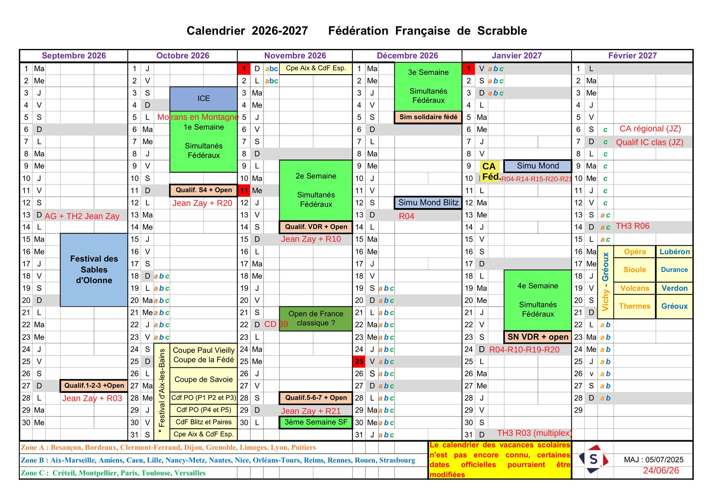
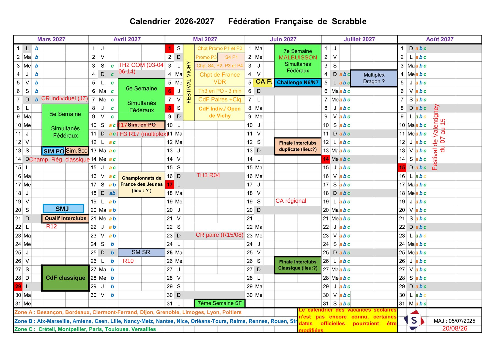

Accueil › Tournois & résultats
CompétitionsTournois & résultats
Qualifications, championnats et tournois homologués par la Fédération Française de Scrabble : le calendrier de la saison 2026-2027 à Besançon et en Franche-Comté.
Les rendez-vous à Besançon
Calendrier prévisionnel du comité Franche-Comté : les dates peuvent encore évoluer. Les rendez-vous passés sont masqués automatiquement.
Pour les horaires, tarifs d'inscription et modalités, contactez Frédéric Bartier — bartier.frederic@wanadoo.fr / 06 80 13 22 23.
Ailleurs en Franche-Comté
Une sélection des tournois, championnats et festivals organisés en Franche-Comté.
Le calendrier 2026-2027 de la saison
Le calendrier prévisionnel du comité Franche-Comté (Fédération Française de Scrabble). Les rendez-vous du comité figurent en rouge, « JZ » désigne la Salle Jean Zay à Besançon. Cliquez sur une image pour l'agrandir.


Calendrier provisoire transmis par le président du club : le calendrier des vacances scolaires n'est pas encore définitif et certaines dates officielles pourraient être modifiées.
Classement (extrait)
| Joueur | Série |
|---|
Le club compte 39 licencié(e)s cette saison, répartis sur l'ensemble des séries, de la 2A à la 7 — un éventail qui va du compétiteur aguerri au joueur loisir. Classement complet et actualisé sur le site de la Fédération Française de Scrabble.
Finale nationale interclubs
Le club s'est qualifié à quatre reprises pour la finale nationale interclubs de la Fédération Française de Scrabble.
Tournois précédemment organisés
| Date | Tournoi | Lieu |
|---|
D'autres tournois ont pu être organisés par le club au fil des saisons. L'historique complet des résultats, partie par partie, est consultable sur le site de la Fédération Française de Scrabble.